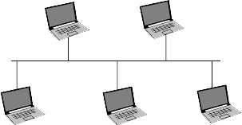

TOPOLOGIA DE RED
La forma en que se encuentran físicamente conectadas las
PC a través del medio de transmisión conforma su topología. Puede ser
en bus, anillo, estrella o jerárquica. Cada una de ellas tiene ventajas y
desventajas sobre las otras.
¿Qué topología se usará? Se deberá
tener en cuenta: complejidad, respuesta a fallas,
alcance, expansión y velocidad de transmisión y
tráfico.
TOPOLOGIA DE BUS
Todos los nodos y los periféricos, están conectados a un
cable común llamado bus de red, que en sus extremos posee
terminadores. La información pasa en ambos sentidos. Cada nodo se
comunica en forma directa con
cualquiera de los nodos conectados a
la red. Es fácil agregar nodos, ya que
se conectan directamente al bus, sin
afectar al resto de la red. Si algún nodo
de la red falla no incide en el
funcionamiento de esta. Como
contrapartida, es difícil el diagnóstico
y detección de las fallas. Si el bus de la red no es el medio de
transmisión adecuado, según la cantidad de información que circule por
la red, podría verse saturado.

TOPOLOGIA DE ANILLO
Los nodos están conectados unos con otros a través del medio
de transmisión formado por un anillo lo cual
circula la información en un solo sentido.
Cuando un nodo envía un mensaje a otro, este
viaja a través de todos los nodos hasta llegar al
destino. Requiere poco cableado. La falla de uno
de sus nodos provoca que la red no funcione.En caso que sea necesario agregar un nodo, la red debe dejar
de operar. La detección de fallas es difícil, porque se debe desconectar
la red completa.
TOPOLOGIA DE ESTRELLA
Aquí hay una computadora central o servidora (más potente
que las demás) a la que se conectan todas las restantes. Todas las
comunicaciones pasan por la servidora, por eso no hay colisiones. Cada
nodo tiene un tramo exclusivo de cable. Pero la red es dependiente de
la servidora, ya que si ésta tiene algún inconveniente deja de
funcionar toda la red.